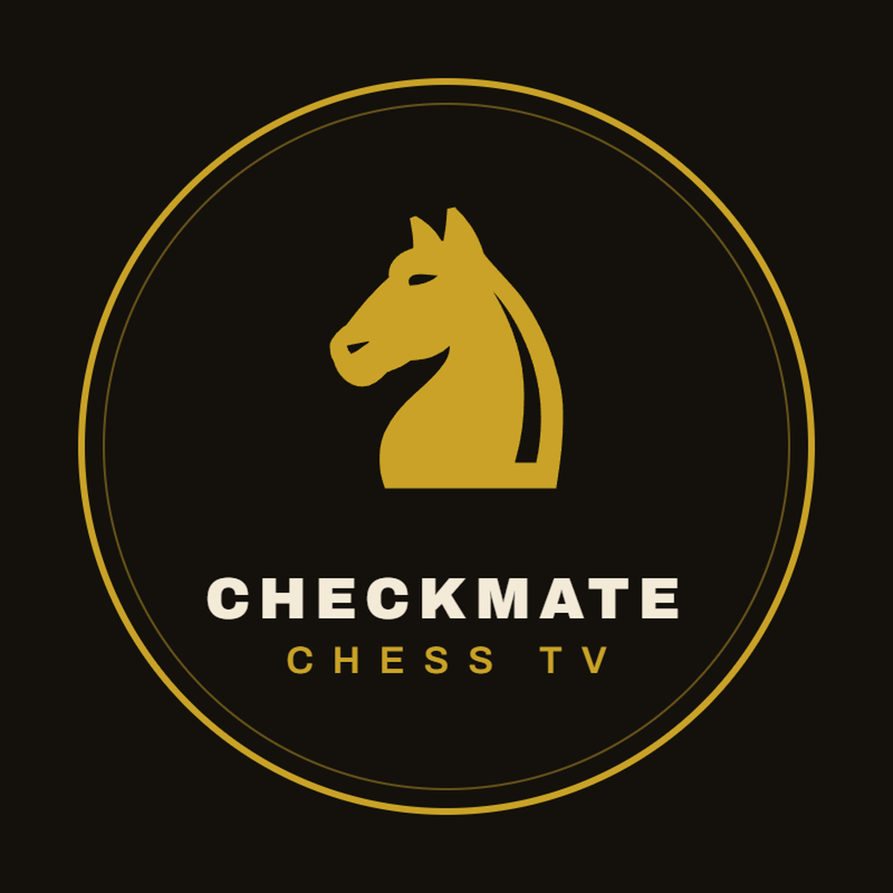

CheckMate Chess TV is an automated content channel that publishes daily chess puzzles as short videos. Each puzzle is drawn from real games and challenges viewers to find the best move within seconds.
This site hosts the legal documents for the CheckMate Chess TV application, an internal tool that uploads our own chess puzzle videos to our own social media accounts (including TikTok) through their official content APIs. The application does not offer accounts or services to third parties.
Find our daily chess puzzles on YouTube (@CheckMateChessTV) and TikTok.